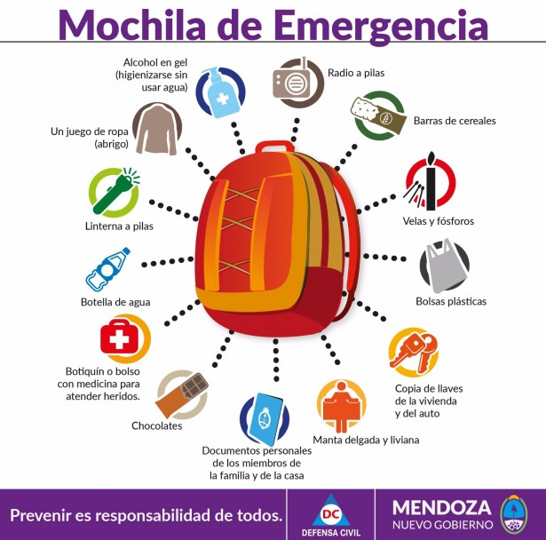

Bienvenido
PREVENCIÓN SÍSMICA ESCOLAR
Este curso forma a docentes y profesionales afines a la educación en Prevención Sísmica, abordando la problemática desde la ciencia y la ingeniería sismoresistente. Otorgando herramientas para el trabajo en el aula, con conceptos psicológicos y premisas para la elaboración de un Plan de Emergencia Sísmica Escolar, entre otros protocolos y estrategias necesarias de aplicación en las instituciones educativas.


ORIENTACION DEL CURSADO
- Este curso forma a docentes y profesionales afines a la educación en Prevención Sísmica, abordando la problemática desde la ciencia y la ingeniería sismoresistente. Otorgando herramientas para el trabajo en el aula, con conceptos psicológicos y premisas para la elaboración de un Plan de Emergencia Sísmica Escolar.
- Aplicación Práctica en el Aula: Podrá integrar conceptos psicológicos y educativos para enseñar de manera efectiva sobre prevención sísmica a estudiantes de diferentes niveles educativos.
- Elaboración de Planes de Emergencia: Estará capacitado para desarrollar un Plan de Emergencia Sísmica Escolar adaptado a las características específicas de cada institución educativas.